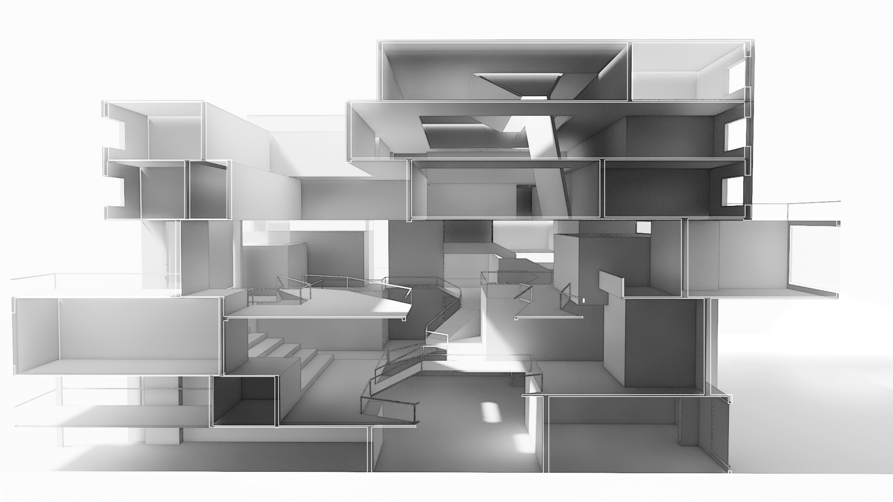

Design · 2020
X-Lab
A multi-functional teaching complex where form emerges from the interplay of exploration and structured learning.
Concept
The form generation primarily stems from internal functions, considering both the spaces for active exploration and those for passive requirements within the X-Lab. The main building is vertically divided into two parts: the lower section features more dynamic and diverse spaces and circulation, fostering conditions for communication and interaction, while the upper section is more structured and orderly, providing spaces for learning and office work. At the top of the building, two integrated skylights introduce distinct lighting atmospheres into the respective sections of the building.

